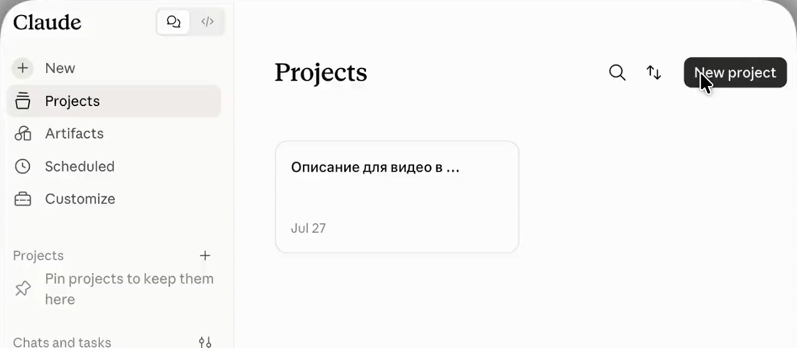
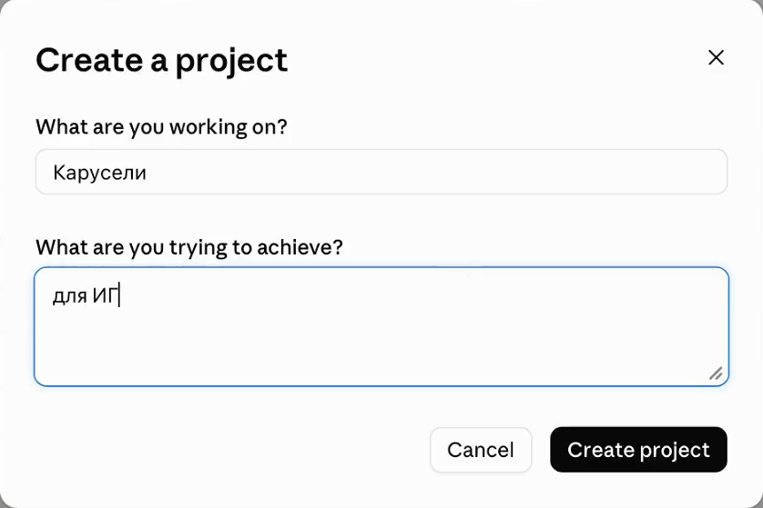
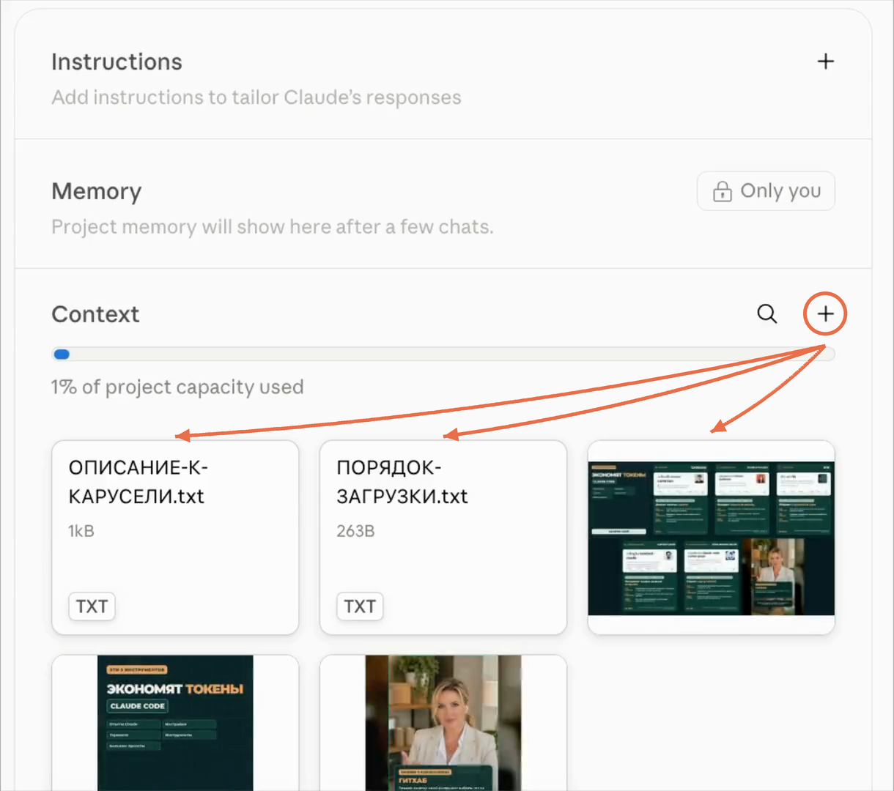
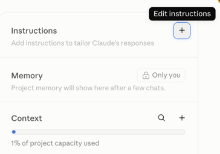
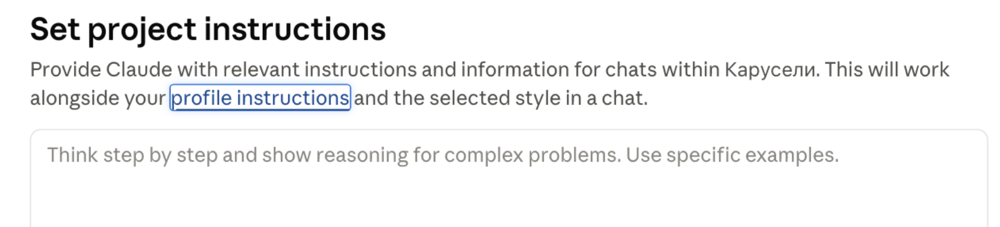
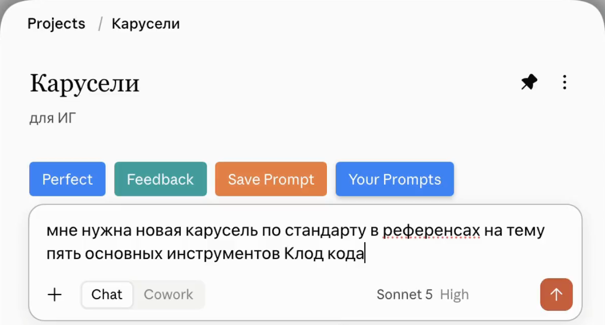

Claude.ai · проекты
Как собрать первый проект в Claude
Чаты по одной задаче расползаются по всей истории, и нужные файлы приходится каждый раз прикреплять заново. Проект собирает их в одно место: документы лежат в базе знаний, а каждый новый чат внутри проекта уже знает, о чём речь
Если ты ещё не вошёл в Claude, начни с инструкции «Как подключить Claude из России». А чтобы Claude знал, кто ты, пройди «Как рассказать Claude о себе»
С чего начать
Сборка проекта
Весь проект собирается за пять шагов и занимает минут десять. Дальше он работает сам: ты просто открываешь его и пишешь, как в обычном чате
1. Где лежат проекты
Открой Claude в браузере и посмотри на левое меню. Под строкой нового чата есть пункт Projects. Нажми на него, и откроется список твоих проектов. В первый раз он будет пустой
Если левого меню не видно: на узком экране оно спрятано. Нажми на значок из трёх полосок в левом верхнем углу, меню выедет сбоку
Можно попасть туда и напрямую, по адресу claude.ai/projects

Результат: перед тобой страница проектов, и ты знаешь, как возвращаться сюда каждый раз
2. Создать проект и дать ему имя
В правом верхнем углу страницы проектов нажми New project. Откроется окно Create a project с двумя полями

What are you working on? - название проекта. Пиши по задаче, а не по теме вообще: не «Работа», а «Сайт для студии» или «Посты для Телеграма». Тогда через месяц ты найдёшь нужный проект за секунду
What are you trying to achieve? - короткое пояснение, о чём проект. Это подпись для тебя, чтобы не путать проекты между собой
На бесплатном тарифе можно создать до пяти проектов. Если пять уже есть, новый не создастся, пока не удалить или не убрать в архив один из старых
Результат: проект создан, и ты попал внутрь него - на пустой экран с полем ввода и базой знаний справа
3. Добавить документы в базу знаний
Посмотри вправо внутри проекта. Там столбец из трёх блоков: Instructions, Memory и Context. База знаний - это Context, нижний блок. Это общая папка проекта: всё, что ты в неё положишь, видят все чаты этого проекта
Нажми + справа от слова Context и добавь файлы: документы, таблицы, тексты, куски кода. Можно вставить текст прямо в окно, не загружая файл, или перетащить файлы мышкой прямо на этот столбец

Клади туда то, что Claude должен помнить постоянно: описание твоего продукта, прайс, готовые тексты, выгрузку переписки с клиентом, техническое задание
Главное про базу знаний: чаты внутри проекта не видят друг друга. Файл, который ты прикрепил в одном чате, в соседнем не появится. Общим он становится только тогда, когда лежит в базе знаний проекта
На платных тарифах в проект помещается заметно больше материалов: Claude включает режим поиска по базе и расширяет её объём примерно в десять раз
Результат: документы лежат в базе знаний, и прикреплять их в каждом чате больше не нужно
4. Написать инструкции проекта
Открой в том же правом столбце верхний блок Instructions - инструкции проекта. Здесь ты один раз объясняешь, как Claude должен вести себя именно в этом проекте: в какой роли, каким тоном, что учитывать и чего не делать


Это не то же самое, что общие настройки профиля. Профиль говорит, кто ты вообще. Инструкции проекта говорят, какую работу ты делаешь здесь
Ты помогаешь мне вести этот проект. Что делаем: [коротко, что за проект и какой нужен результат]. Для кого: [кто читатель или клиент]. Опирайся на документы из базы знаний проекта, не выдумывай цифры и факты, которых там нет. Если данных не хватает - спроси, а не заполняй пропуск догадкой. Пиши простым языком, без канцелярита
Подставь в квадратные скобки свои слова и вставь текст в поле инструкций. Дальше правь по ходу: заметил, что Claude раз за разом делает не то, допиши строку сюда
Результат: каждый новый чат проекта начинается уже настроенным, и объяснять заново не нужно
5. Начать чат внутри проекта
Напиши задачу своими словами прямо в поле ввода внутри проекта. Выглядит оно как обычный чат, но работает иначе: этот чат уже видит базу знаний и инструкции
Все чаты проекта складываются тут же, отдельным списком. История задачи перестаёт смешиваться с остальной перепиской

Как проверить, что база знаний работает: напиши в чате проекта «перечисли, какие документы лежат в базе знаний проекта». Claude назовёт файлы. Если он их не видит - значит файл прикреплён к чату, а не добавлен в базу
Результат: проект собран и работает. Дальше ты открываешь его и пишешь, не повторяя вводные
Что делать со старой перепиской
Перенести старый чат в проект
Обычная ситуация: по задаче уже есть длинный разговор, и начинать с нуля жалко. Переносить его не нужно вручную
Открой нужный чат, нажми на меню с тремя точками рядом с его названием и выбери перенос в проект. Чат встанет в список проекта вместе со всей историей
Важная деталь: перенос кладёт в проект сам разговор, но не наполняет базу знаний. Файлы, которые были прикреплены внутри того чата, добавь в Context отдельно, иначе соседние чаты их не увидят
Результат: начатая работа продолжается в проекте, ничего не потеряно
Чтобы не ждать лишнего
Что проект не делает
Три причины, по которым новички решают, что проект сломался
Границы проекта
- Чаты проекта не видят друг друга: общее только то, что лежит в базе знаний
- Имя и описание проекта - подпись для тебя, Claude в работе на них не опирается
- Проект не подтягивает файлы с твоего компьютера сам: документы нужно положить в базу знаний руками
Если проект стал лишним: его можно убрать в архив, и он перестанет мешаться в списке, сохранив все настройки. Удалить архивный проект сразу нельзя - сначала верни его из архива, тогда появится удаление
Результат: ты понимаешь, где проходит граница, и не ищешь поломку там, где её нет
С чего начать сегодня
Какие проекты собрать первыми
Пяти проектов бесплатного тарифа хватает надолго, если заводить их по крупным направлениям, а не по каждой мелкой задаче
| Твой продукт | Описание, прайс, частые вопросы клиентов. Отсюда берутся тексты, письма и ответы |
|---|---|
| Контент | Твои удачные посты, темы, правила подачи. Claude пишет в твоём стиле, а не в среднем |
| Учёба | Конспекты, инструкции, заметки с занятий. Удобно спрашивать по своим материалам |
| Разовая крупная задача | Переезд, ремонт, отчёт, поиск работы. Закончилась - проект в архив |
Частая ошибка: завести проект и оставить базу знаний пустой. Тогда это просто папка с чатами. Ценность появляется с первого документа внутри
Результат: у тебя есть понятный список, с чего начать, и проект не превращается в пустую папку
Официальные материалы
Источники
Следующий шаг
Твоя задача собрана в одном месте
Проект наводит порядок внутри чата. Следующий шаг - когда Claude работает не с прикреплёнными файлами, а прямо с папкой на твоём компьютере и собирает готовое: сайт, бота, таблицу. В ИИ-Лагере это делается простыми командами по-русски, без программирования
Перейти от чата к Claude Code